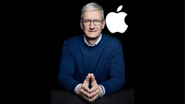

‘Focus op wat echt telt’
De perfectionist en dyslect Steven Paul ‘Steve’ Jobs, werd op 24 februari 1955 geboren. Zijn Syrische vader en Zwitsers-Amerikaanse moeder stonden Steve af aan Clara en Paul Jobs. Hij groeide vervolgens op in Mountain View, Californië (VS).
 Na een aantal maanden aan het Reed College in Oregon te hebben gestudeerd verliet hij school en ging aan de slag bij Atari. Hier leerde hij Ronald Wayne kennen. En samen met Steve Wozniak richtten ze Apple op. De naam Apple bedacht Jobs toen hij aan een fruit-dieet deed. Het logo is ontworpen door Rob Janoff die de hap uit de appel bedacht had omdat het anders op een kers leek.
Na een aantal maanden aan het Reed College in Oregon te hebben gestudeerd verliet hij school en ging aan de slag bij Atari. Hier leerde hij Ronald Wayne kennen. En samen met Steve Wozniak richtten ze Apple op. De naam Apple bedacht Jobs toen hij aan een fruit-dieet deed. Het logo is ontworpen door Rob Janoff die de hap uit de appel bedacht had omdat het anders op een kers leek.
In 1985 verliet Jobs Apple. Maar kwam toen het erg slecht met Apple ging in 1997 terug. Jobs greep in door het aantal producten te beperken en te focussen op waar Apple echt goed in was en nog steeds is: INNOVATIE EN DESIGN.
Bijzonder was de manier waarop Jobs nieuwste ontwikkelingen bekendmaakte, hij hield dan levendige toespraken om nieuwe producten te introduceren, deze toespraken werden en worden nog steeds Stevenotes genoemd.
Helaas kreeg Jobs alvleesklierkanker waaraan hij op 5 oktober 2011 overleed. Hij was getrouwd met Laurene Powell en had 1 zoon en 3 dochters (waarvan 1 uit een eerdere relatie). Timothy Donald ‘Tim’ Cook volgde Steve Jobs op, sindsdien is de omzet en winst van Apple verdubbelt. Cook is tevens bestuurslid van Nike.